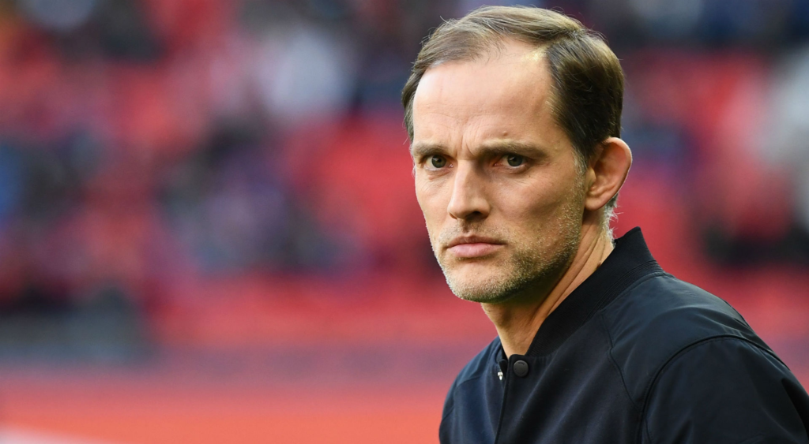
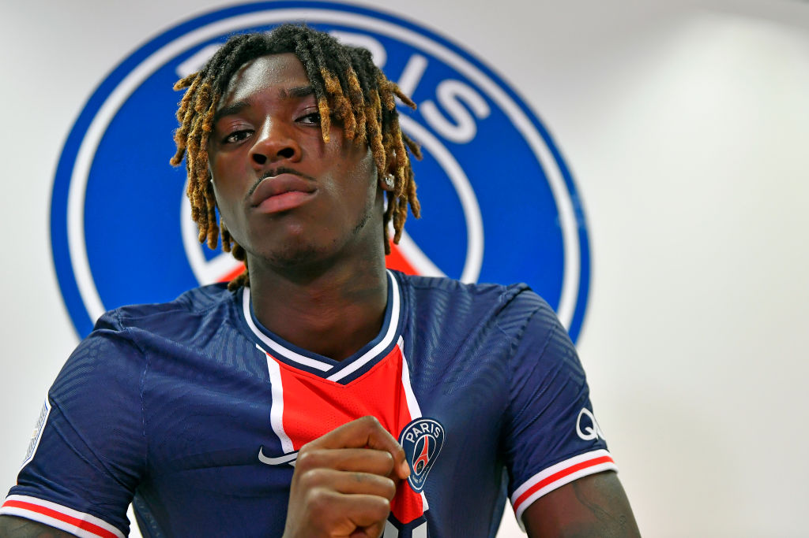

News

ISTANBUL BASAKSEHIR
"The number one objective is to win. We mustn't be thinking about anything else and we prepare for each match in order to win them. We need to show the same respect for the game and our opponents as in our most recent matches. That means being at 100%. If we finish top of the group, then we'll have the return leg at home. But getting through the Round of 16 of the Champions League is never easy, as we've seen. The most important thing is to give everything and to play the match with our qualities. We need to be applied and at 100% against Basaksehir, who deserved to play this competition as champions of Turkey. There are no easy matches. We need to keep our run going."
SPIRIT
"I have to say I have the impression that the players are aware that they've needed to work in order to be in the situation we're in before this match. Everyone has understood things. We're going to prepare for this game in a serious way, without changing our discourse. We're all very focused because we will finish top of the group with a win. We know what winning a Champions League match implies. It will be a third final, after those against Manchester United and Leipzig. Playing every three days doesn't give us time to think too much. That's good, and I like it. We need to use the time we have well in order to prepare for this match. We need to get on the ball, play in their half, press and be very focused."
RAFINHA
"When I was Mainz coach, I followed him when he was playing for Barcelona's B team with his brother Thiago. It was exceptional and I've followed the careers of the two of them. I've always been a fan! Throughout his career, Rafinha has always played by giving everything for his team. He had the quality to play, but hasn't been lucky with injuries. I'm not surprised by him. He has everything you expect from a Barcelona player. He's humble, is always smiling, always thinks of the team. He's got tactical and technical qualities of the very highest level. The challenge for him is to stay fit as he runs a lot. At this point in time, he's really important to us. Everybody wants a player like him in their team. Being his coach is a pleasure."
Thomas Tuchel: "A third final"
On the eve of the Matchday 6 final UEFA Champions League group stage game against Istanbul Basaksehir, this Tuesday December 8 at 21:00 at the Parc des Princes, the Paris Saint-Germain coach answered questions from journalists. Extracts…ISTANBUL BASAKSEHIR
"The number one objective is to win. We mustn't be thinking about anything else and we prepare for each match in order to win them. We need to show the same respect for the game and our opponents as in our most recent matches. That means being at 100%. If we finish top of the group, then we'll have the return leg at home. But getting through the Round of 16 of the Champions League is never easy, as we've seen. The most important thing is to give everything and to play the match with our qualities. We need to be applied and at 100% against Basaksehir, who deserved to play this competition as champions of Turkey. There are no easy matches. We need to keep our run going."
SPIRIT
"I have to say I have the impression that the players are aware that they've needed to work in order to be in the situation we're in before this match. Everyone has understood things. We're going to prepare for this game in a serious way, without changing our discourse. We're all very focused because we will finish top of the group with a win. We know what winning a Champions League match implies. It will be a third final, after those against Manchester United and Leipzig. Playing every three days doesn't give us time to think too much. That's good, and I like it. We need to use the time we have well in order to prepare for this match. We need to get on the ball, play in their half, press and be very focused."
RAFINHA
"When I was Mainz coach, I followed him when he was playing for Barcelona's B team with his brother Thiago. It was exceptional and I've followed the careers of the two of them. I've always been a fan! Throughout his career, Rafinha has always played by giving everything for his team. He had the quality to play, but hasn't been lucky with injuries. I'm not surprised by him. He has everything you expect from a Barcelona player. He's humble, is always smiling, always thinks of the team. He's got tactical and technical qualities of the very highest level. The challenge for him is to stay fit as he runs a lot. At this point in time, he's really important to us. Everybody wants a player like him in their team. Being his coach is a pleasure."

HIS ADAPTATION
"I'm very happy to be able to play here. It's a big club, and I'm working hard in order to give 100% at all times, for the supporters and for my team-mates. Everything's going well for me, and I hope it will carry on like this. I'm working very hard and I want to bring all that I can in order to get the best results for the team. I'm playing with great players, and I'm learning every day from playing alongside them."
HIS FUTURE
"I'm very focused on the club's objectives. I'm focused on what needs to be done and I feel good. I have good sensations on the field and I'm only thinking about playing good games and helping the team win. As for my future, we'll look at that later."
ISTANBUL BASAKSEHIR
"It will be a great match, and we're not thinking about the first match between the two sides, only about tomorrow's game. It will be a difficult match against a very good side, and we'll have to give it our all in order to qualify."
Moise Kean: "Don't think about the first match"
The Paris Saint-Germain forward spoke about the Matchday 6 group stage match of the UEFA Champions League to the press on Monday December 7 at the Ooredoo Centre.HIS ADAPTATION
"I'm very happy to be able to play here. It's a big club, and I'm working hard in order to give 100% at all times, for the supporters and for my team-mates. Everything's going well for me, and I hope it will carry on like this. I'm working very hard and I want to bring all that I can in order to get the best results for the team. I'm playing with great players, and I'm learning every day from playing alongside them."
HIS FUTURE
"I'm very focused on the club's objectives. I'm focused on what needs to be done and I feel good. I have good sensations on the field and I'm only thinking about playing good games and helping the team win. As for my future, we'll look at that later."
ISTANBUL BASAKSEHIR
"It will be a great match, and we're not thinking about the first match between the two sides, only about tomorrow's game. It will be a difficult match against a very good side, and we'll have to give it our all in order to qualify."

Matchday 6 Fixtures of the UEFA Champions League
Discover the full fixture list for the 6th and final Matchday of the group stage of the UEFA Champions League. Paris Saint-Germain will take on Istanbul Basaksehir on Tuesday December 8 at 21:00 at the Parc des Princes, a match shown live on RMC Sport and Téléfoot.Tuesday December 8 2020 at 18:55
SS Lazio - Club Bruges (group F) (live on RMC Sport 3 and Téléfoot Stadium 2) FC Zenit - Borussia Dortmund (group F) (live on RMC Sport 2 and Téléfoot Stadium 1)
Tuesday December 8 2020 at 21:00 (multiplex on RMC Sport 3)
Stade Rennais FC - Séville FC (group E) (live on RMC Sport 2 and Téléfoot Stadium 1) Chelsea FC - FC Krasnodar (group E) (live on RMC Sport Live 7 and Téléfoot Stadium 2) FC Dynamo Kiev - Ferencvaros TC (group G) (live on RMC Sport Live 8 and Téléfoot Stadium 4) FC Barcelone - Juventus (groupe G) (live on RMC Sport Live 5 and Téléfoot Stadium 3) Paris Saint-Germain - Istanbul Basaksehir (group H) (live on RMC Sport 1 and Téléfoot) RB Leipzig - Manchester United FC (group H) (live on RMC Sport Live 6 and Téléfoot Stadium 5)
Wednesday December 9 2020 at 18:55
AFC Ajax - Atalanta BC (group D) (live on RMC Sport 3 and Téléfoot Stadium 1) FC Midtjylland - Liverpool FC (group D) (live on RMC Sport 2 and Téléfoot Stadium 2)
Wednesday December 92020 at 21:00 (multiplex on RMC Sport 3)
FC Bayern Munich - FC Lokomotiv Moscou (group A) (live on RMC Sport Live 5 and Téléfoot Stadium 1) RB Salzbourg - Club Atlético de Madrid (group A) (live on RMC Sport Live 7 and Téléfoot Stadium 2) FC Internazionale Milan - FC Shakhtar Donetsk (group B) (live on RMC Sport Live 6 and Téléfoot Stadium 4) Real Madrid CF - VfL Borussia Mönchengladbach (group B) (live on RMC Sport 2 and Téléfoot Stadium 3) Olympiacos FC - FC Porto (group C) (live on RMC Sport Live 8 and Téléfoot Stadium 5) Manchester City FC - Olympique de Marseille (group C) (live on RMC Sport 1 and Téléfoot)